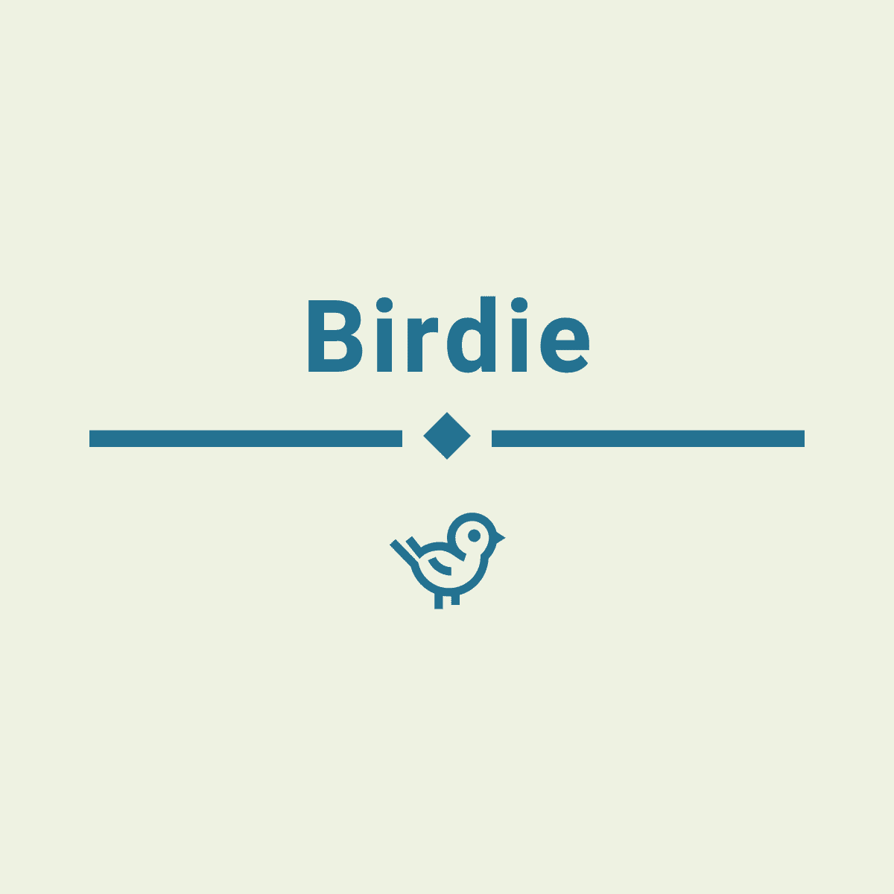

Serpentaire / Messager Sagittaire
Serpentaire / Messager Sagittaire
 Chouette chevêche / Chouette d'Athena
Chouette chevêche / Chouette d'Athena
 Elanion Blanc
Elanion Blanc
 Trichodrome échelette
Trichodrome échelette
 Etourneau sansonnet
Etourneau sansonnet


11000
species
1500
risk of extinction
20%
extinction because of human
Birds are a group of warm-blooded vertebrates constituting the class Aves, characterised by feathers, toothless beaked jaws, the laying of hard-shelled eggs, a high metabolic rate, a four-chambered heart, and a strong yet lightweight skeleton. Birds live worldwide and range in size from the 5.5 cm (2.2 in) bee hummingbird to the 2.8 m (9 ft 2 in) ostrich. Birds have wings whose development varies according to species; the only known groups without wings are the extinct moa and elephant birds. Wings, which evolved from forelimbs, gave birds the ability to fly, although further evolution has led to the loss of flight in some birds, including ratites, penguins, and diverse endemic island species. The digestive and respiratory systems of birds are also uniquely adapted for flight. Some bird species of aquatic environments, particularly seabirds and some waterbirds, have further evolved for swimming.


The sun parakeet (Aratinga solstitialis), also known in aviculture as the sun conure, is a medium-sized, vibrantly colored parrot native to northeastern South America. The adult male and female are similar in appearance, with predominantly golden-yellow plumage and orange-flushed underparts and face. Sun parakeets are very social birds, typically living in flocks. They form monogamous pairs for reproduction, and nest in palm cavities in the tropics. Sun parakeets mainly feed on fruits, flowers, berries, blossoms, seeds, nuts, and insects.
Serpentaire / Messager Sagittaire
Chouette chevêche / Chouette d'Athena
Elanion Blanc
Trichodrome échelette
Etourneau sansonnet